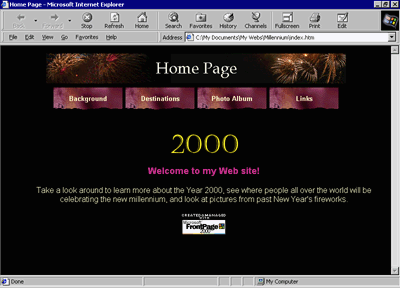

| ||
The best way to get acquainted with Microsoft FrontPage 2000 is through hands-on practice. This tutorial will show you how easy it is to build Web sites every bit as sophisticated and attractive as many of the award-winning sites on the World Wide Web today.
In the following two lessons, you'll build a "Millennium Celebration Web" that provides information about the Year 2000. We've prepared a folder of files for you to practice with while you create this Web site.

This tutorial is divided into two lessons:
This lesson teaches you how to create and edit Web pages; work with text and hyperlinks; add pictures, animations, clip art, and files; format lists; position objects; design a feedback form; make a photo gallery; design a Web site structure; and create a Web site.
In this lesson, you will learn how to create navigation hyperlinks; add shared borders and navigation bars to pages; insert page banners; apply and customize a graphical theme; check spelling and replace text across the Web site; sort and organize files and folders; view Web site reports; and preview and publish the finished Web site.